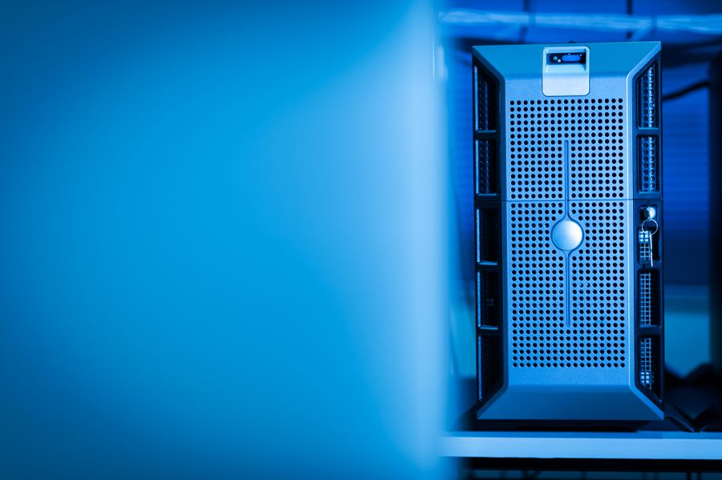
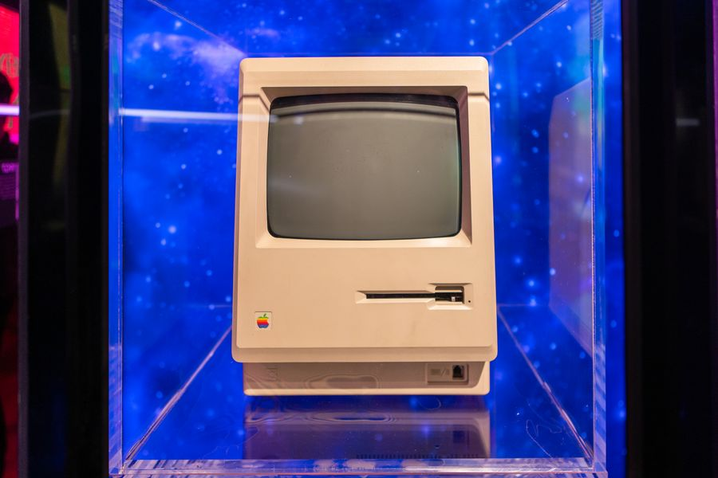
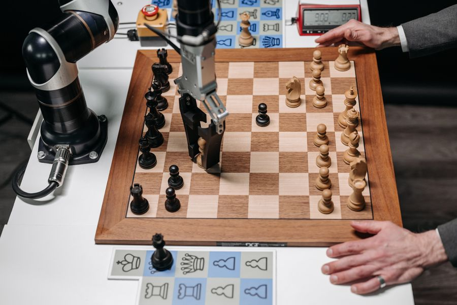
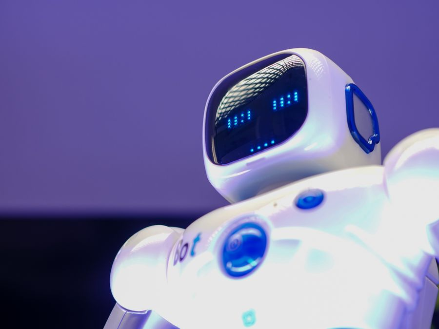

不用到处找资料：先按阶段定起点，再跟着 43 章教程动手；模型、工具、成本、作品集一路查得到。每条结论都标着来源与核验日期，不用信我，去点原文。
只收模型发布、工具版本与价格变化。10 月 23 条、9 月 7 条，每条都能点回原始出处；另附 2026 年 1-8 月模型时间线。
带日期 · 带出处 · 每日更新看这几天的变化能自己跑起来才算数：推理引擎、RAG、Agent、图像、语音、编程 Agent 分 15 类，每条标星数、许可证、上手难度与国内可直连性。
15 类 · 151 个 · 4.98M 星进仓库库
部署百科四条路线（本地 / 图形 / 云额度 / 自建服务）+ 决策树 + 6 个引擎横评 + 五档硬件门槛 + 六种量化格式，附可直接复制的启动命令。
引擎横评 · 硬件门槛 · 一键命令看部署方案从哪拿模型、从哪租卡：云 API、本地运行、GPU 算力、Agent 平台、图像视频、网关中间层，统一标国内可用性与计价方式。
6 类 33 家 · 带价目比一比平台从「会用」到「会调」「会搭」「会训练」四阶段：43 章教程（提示词 / Agent / RAG / 微调 / 多模态 / 职场）+ 毕业设计与打卡进度。
先定阶段 · 再往下学进入学院
通识 · AI 博物馆从 2017 年 Transformer 到 2026 年开源追平。外加一间「废墟馆」：Prompt 咒语、微调一切、全自主 Agent——记下已经不管用的做法。
时间轴 · 废墟馆 · 判断依据进展馆Prompt 魔法咒语、微调一切、AutoGPT 式全自主循环、向量库军备竞赛、参数量排行榜——每一条都写清了当年为什么成立、现在为什么失效、沉淀下来该用什么。照着过时教程做，浪费的是你的时间和显卡钱。
带失效原因 · 带替代做法 · AI 博物馆内 去看看别踩这些坑HTML / JS / Python 均在你的浏览器本地执行，代码不上传。JS 与 Python 的输出、报错会实时回传到「控制台」。Python 首次运行需联网加载运行时（Pyodide，约数十 MB）。

微信小程序微信小程序 AI 校园助手：浮动助手、消息中心、AI 中心、资源中心，基于微信云开发。
微信小程序 · 云开发 · AI 助手 查看作品开源插件化 AI Agent 平台，插件即插即用，开发者文档与插件市场规划中。
开源 · Agent 平台 · v0.1.0-rc.5 查看作品PID 控制、弹簧阻尼、抛体运动、RC 电路、蒙特卡洛、单摆、波动方程等交互仿真脚本。
Python · matplotlib · 交互 进入实验室
创作中枢一站式 AI 创作中枢：门户 + 对话工作台 + 工作站 + 生图生视频，所有 AI 入口收进一个大脑。
创作中枢 · 多模态 · 本地优先 回到大脑10 集 AI 生成古装短剧，9:16 竖屏格式，每集 50 秒，角色与场景全流程 AI 制作。
竖屏短剧 · 9:16 · AI 生成 查看剧集交互式英语练习平台：词汇、听力、AI 对话陪练，学习进度可视化追踪。
教育 · 交互 · AI 陪练 开始学习正在装载开源作品库（122 个真实 GitHub 项目）…
数据积累中：多逛几页，热榜就会亮起来。
没有匹配的工具 · 换个关键词，或点「全部」重新看。
设置会被记住，下次打开自动恢复。模型与多模态统一由白驹调度。